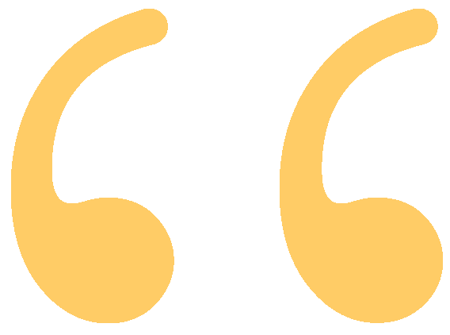
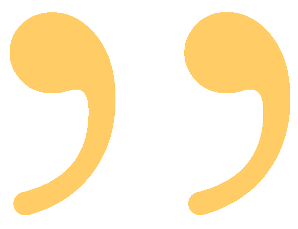

Hi there!
I'm Taqiya,
an aspiring computer engineer from
Bangladesh, based in New Jersey, USA.
an aspiring computer engineer from
Bangladesh, based in New Jersey, USA.
 In our line of work, you compromise where you can. Where you can't, don't. Even if everyone is telling you that something wrong is right, even if the whole world is telling you to move, it is your duty to plant yourself like a tree, look them in the eye, and say, 'No, you move.' 
-Agent Sharon Carter, Captain America: Civil War (2016)
I am a Computer Engineering student at Rutgers University finding my way to a fulfilling life and career. I am passionate about building relationships and learning from new experiences. I never shy away from putting in that extra effort to achieve excellence in my work. My peers have said that I'm the "voice of reason" in any group dynamic by virtue of my ability to rationalize and evaluate situations. I believe my work ethic and discipline are my greatest fortitude in life.
what motivates me
Check marks and people are my greatest motivators in life. I derive enthusiasm from setting and meeting goals and expectations. Working with people, either as a leader or as part of a team, stimulates enterprise in me. My biggest thrill in life is completing a difficult project and seeing it through to the end, despite all hurdles.
why computer engineering?
The nature of technology to champion any and all challenges faced by humans fascinated me to pursue a degree in computer engineering. I thrive on resolving problems that come with a challenge, I enjoy that in engineering no solution is too grandiose, and there is always room to improve. I could never see myself doing anything else with my life than working as an engineer. I hope to use the passion I have for technology and problem-solving to meaningfully impact people’s lives one day, even if that is in a small capacity.
my biggest weaknesses
A weakness that I want to overcome in the near future is being over-disciplined; in other words, I lack spontaniety at times. I'm the kind of person who works best when I'm well-prepared and know my destination; a blurred vision tends to throw me off. But given the world we are living in today, this can be detrimental. So I'm currently trying to put myself in situations that push me to be a bit more adaptable with my plans and drive me to think on my feet.
I ideated, designed and partially coded using Python a menstrual health app for women in Bangladesh aged 13-30. The project won the Niloufer Manzur Memorial Award - Best Project for Education & Awareness at the PrivaShe Hackathon 2020.
I wrote a research paper analyzing statistical data and historical evidence to conclude that the self-care industry is a propaganda created by cosmetics manufacturers. The paper was selected to be presented at Rutgers’ Undergraduate Research Writing Conference under the 103 Roundtable on Consumer Culture. I ideated, filmed and edited the video presentation of the paper uploaded in the conference website.
I wrote a research paper that examines the insurgence of nuclear tension between India and Pakistan – two of the latest and most concerning members of the nuclear weapons club. Current studies and news pieces predict an impending war brewing between the two nations that have been at loggerheads since their inception in 1947, with the probability of use of nuclear arsenals. This paper evaluates scenarios that may result in a nuclear combat and the subsequent environmental, anthropological, and geopolitical consequences. The related outreach video is a concise non-academic version of the main paper, aiming to engage a more diverse audience and inform them of the current nuclear threat surrounding the India-Pakistan dyad.
I collaborated with 5 interns to detect if social distancing was being followed by people in New York City based on dashcam and traffic image data. I worked on • Using NumPy and OpenCV to create a Python program that implements YOLO (an object detection model) for people detection and analysis of social distancing among them. building programs using OpenCV, NumPy, and PIL to filter out images based on brightness and whether they have at least 1 (one) person, and cropping out patches around the person. Processing and maintaining image directories and Python scripts on Ubuntu remote server. I also helped in designing and updating the project website weekly to establish a timeline, record of progress, and future goals
[resume] 2021 Taqiya Ehsan. All rights reserved.